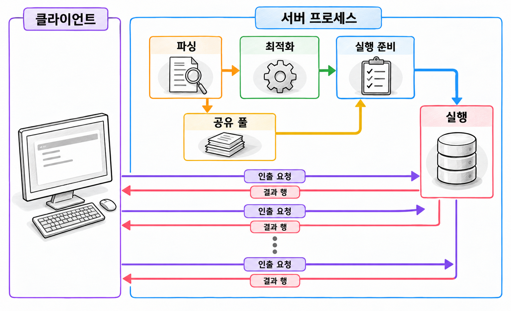

10장. SQL 처리와 옵티마이저란?
1. SQL이 실행되는 과정
1.1 파싱·최적화·실행·결과 인출
SQL에는 원하는 결과를 적습니다. 어떤 인덱스를 읽고 어떤 순서로 테이블을 연결할지는 대부분 Oracle이 결정합니다. 같은 SQL도 데이터의 양과 분포에 따라 실행 방법이 달라집니다.
옵티마이저(optimizer)는 SQL의 실행 방법을 선택하는 구성 요소입니다. 사용할 수 있는 실행 방법을 비교해 실행 계획을 만듭니다.
조회 SQL을 처리하는 주요 단계는 다음과 같습니다.
| 단계 | 주요 작업 |
|---|---|
| 파싱 | 문법과 객체·컬럼·권한을 확인하고 공유 가능한 SQL을 찾습니다. |
| 최적화 | 통계 등을 바탕으로 실행 방법을 비교하고 실행 계획을 선택합니다. |
| 실행 | 실행 계획에 따라 데이터를 읽거나 가공하기 시작합니다. |
| 결과 인출 | 클라이언트의 요청에 따라 조회 결과를 전달합니다. |
파싱(parsing)은 SQL을 분석하고 실행을 준비하는 과정입니다. 문법이 맞아도 테이블이나 컬럼이 없으면 파싱에 실패합니다. 객체를 사용할 권한도 필요합니다.
최적화(optimization)에서는 접근할 데이터의 양과 처리 비용을 추정합니다. 선택한 실행 계획은 실제로 실행할 수 있는 내부 구조로 만들어집니다. 기존 실행 계획을 재사용한다면 최적화 작업을 생략할 수 있습니다.
결과 인출(fetch)은 조회 결과를 클라이언트로 가져오는 작업입니다. 실행과 인출이 항상 완전히 분리되는 것은 아닙니다. 조회에서는 인출 요청에 따라 추가 블록을 읽고 다음 결과를 만들기도 합니다.

SQL Developer에 처음 몇십 행이 표시되었다고 전체 결과를 읽은 것은 아닙니다. 뒤쪽 결과를 가져오는 동안에도 서버 작업이 이어질 수 있습니다. 조회 성능을 비교할 때는 결과를 어디까지 인출했는지도 맞춰야 합니다.
1.2 하드 파싱·소프트 파싱과 커서 공유
Oracle은 파싱한 SQL과 실행 계획을 공유 풀의 라이브러리 캐시에 보관합니다. 재사용할 수 있는 정보가 있으면 실행할 때마다 계획을 새로 만들 필요가 없습니다.
하드 파싱(hard parsing)은 기존 실행 정보를 재사용하지 못해 최적화와 실행 구조 생성을 거치는 작업입니다. 소프트 파싱(soft parsing)은 기존 실행 정보를 재사용해 이 작업을 줄이는 과정입니다.
| 구분 | 하드 파싱 | 소프트 파싱 |
|---|---|---|
| 기존 실행 정보 | 재사용하지 못함 | 재사용함 |
| 최적화와 실행 구조 생성 | 수행함 | 생략함 |
| 주요 비용 | CPU 사용과 공유 메모리 접근 비용이 큼 | 하드 파싱보다 작지만 비용은 있음 |
커서(cursor)는 SQL의 실행 상태를 관리하는 데 사용하는 핸들입니다. 세션별 바인드값과 실행 상태는 따로 관리하면서 파싱 결과와 실행 계획은 공유할 수 있습니다. 이를 커서 공유(cursor sharing)라고 합니다.
기본 설정에서는 SQL 텍스트가 같아야 공유 후보가 됩니다. 다음 두 문장은 숫자만 다르지만 서로 다른 SQL 텍스트입니다.
코드 조각
SELECT order_id
FROM orders
WHERE member_id = 310;
SELECT order_id
FROM orders
WHERE member_id = 720;이 코드는 ORDERS 테이블이 있다고 가정한 비교용 코드입니다. 값을 SQL 안에 직접 적은 부분을 리터럴(literal)이라고 합니다.
SQL 텍스트가 같다고 반드시 같은 실행 정보를 공유하는 것은 아닙니다. 참조하는 객체, 바인드 데이터 타입, 최적화 환경 등도 호환되어야 합니다. 같은 SQL 아래에서도 실행 정보를 여러 자식 커서로 관리할 수 있습니다.
이전에 실행한 SQL이라도 다시 하드 파싱할 수 있습니다. 공유 풀에서 정보가 제거되거나 객체 변경으로 무효화되기도 하기 때문입니다. 하드 파싱은 SQL의 첫 실행에서만 발생하는 작업이 아닙니다.
1.3 바인드 변수와 값에 따른 데이터 분포
바인드 변수(bind variable)는 SQL 텍스트와 별도로 값을 전달할 자리입니다. Oracle SQL에서는 보통 이름 앞에 콜론을 붙여 표시합니다.
코드 조각
SELECT order_id
FROM orders
WHERE member_id = :member_id;회원번호가 바뀌어도 SQL 텍스트는 같습니다. 애플리케이션은 :member_id에 값을 전달하므로 커서 공유 가능성이 높아집니다. 바인드 데이터 타입은 비교할 컬럼에 맞춰야 합니다.
그러나 값마다 조회량이 크게 다르면 같은 실행 계획이 항상 적합하지는 않습니다.
주문 10만 건의 상태가 다음과 같다고 가정합니다.
| 주문 상태 | 행 수 | 전체에서 차지하는 비율 |
|---|---|---|
| 완료 | 97,000 | 97% |
| 대기 | 2,500 | 2.5% |
| 취소 | 500 | 0.5% |
취소 주문은 인덱스로 찾아 테이블을 읽는 방법이 유리할 수 있습니다. 완료 주문은 대부분의 행을 읽어야 하므로 전체 테이블 스캔이 유리할 수 있습니다. 실제 선택은 테이블 크기와 인덱스 구조 등에도 영향을 받습니다.
Oracle은 하드 파싱 시 바인드값을 확인해 추정에 활용할 수 있습니다. 이를 바인드 피킹(bind peeking)이라고 합니다. 실행할 때마다 새로운 값으로 계획을 만드는 것은 아닙니다.
적응형 커서 공유(adaptive cursor sharing)는 바인드값에 따른 조회량 차이를 관찰합니다. 필요한 경우 서로 다른 계획을 사용할 수 있게 합니다. 다만 모든 SQL에 즉시 여러 계획이 생기는 것은 아닙니다.
바인드 변수를 사용하면 계획을 공유하기 쉬워집니다. 데이터가 특정 값에 몰려 있다면 대표적인 값들을 함께 확인해야 합니다.
2. 비용 기반 옵티마이저
2.1 선택도·예상 행 수·비용
비용 기반 옵티마이저(Cost-Based Optimizer, CBO)는 후보 실행 계획의 비용을 추정합니다. 검토한 후보 중 비용이 가장 낮은 계획을 선택합니다.
선택도(selectivity)는 입력 행 중 조건에 맞을 것으로 예상하는 비율입니다. 예상 행 수(cardinality)는 각 처리 단계에서 나올 것으로 추정하는 행의 수입니다.
전체 주문이 10만 건이고 조건의 선택도가 0.005라면 예상 행 수는 다음과 같습니다.
| 항목 | 값 |
|---|---|
| 입력 행 수 | 100,000 |
| 선택도 | 0.005 |
| 예상 행 수 | 500 |
여기서 선택도는 비율이 작을수록 더 적은 행을 남긴다는 뜻으로 사용합니다. 예상 행 수는 최종 결과뿐 아니라 테이블 검색과 조인 같은 중간 단계에도 계산됩니다.
비용(cost)은 I/O와 CPU 등의 예상 자원 사용량을 내부 단위로 나타낸 값입니다. 비용이 20이라고 20밀리초가 걸리는 것은 아닙니다.
예상 행 수를 실제보다 작게 계산하면 반복 접근 비용도 작게 평가할 수 있습니다. 반대로 너무 크게 계산하면 소량 조회에 적합한 접근 방법을 놓칠 수 있습니다. 비용 숫자만 낮추려 하기보다 행 수 추정이 타당한지 확인해야 합니다. 비용은 이 추정치를 바탕으로 계산되기 때문입니다.
2.2 접근 경로·조인 순서·조인 방식의 선택
옵티마이저는 개별 테이블의 읽기 방법과 여러 테이블의 연결 방법을 함께 검토합니다.
| 선택 대상 | 판단할 내용 |
|---|---|
| 접근 경로 | 전체 테이블을 읽을지, 인덱스를 이용할지 |
| 조인 순서 | 어떤 데이터를 먼저 읽고 연결할지 |
| 조인 방식 | 반복 탐색, 해시, 정렬 기반 연결 중 무엇을 사용할지 |
접근 경로(access path)는 테이블의 행을 찾아가는 방법입니다. 인덱스가 있어도 전체 테이블 스캔을 선택할 수 있습니다. 많은 행을 가져오려면 인덱스와 테이블을 함께 읽는 비용이 더 클 수 있기 때문입니다.
조인 순서도 SQL의 FROM 절에 적은 순서로 고정되지 않습니다. 주문과 회원을 연결할 때, 조건에 맞는 주문이 적다면 주문에서 시작할 수 있습니다. 특정 회원 집단이 매우 작다면 회원에서 시작하는 편이 유리할 수 있습니다.
조인 방식에는 Nested Loops, Hash Join, Sort Merge Join 등이 있습니다. 각 방식의 비용은 입력 행 수와 인덱스, 메모리 등에 따라 달라집니다.
어느 테이블에서 먼저 시작할지만 따로 결정할 수는 없습니다. 먼저 읽은 행마다 다음 테이블을 어떻게 찾을지도 함께 계산해야 합니다. 같은 조인 순서라도 연결 방법에 따라 전체 비용이 달라집니다.
2.3 서브쿼리 변환과 조건 밀어 넣기
SQL에 적힌 구조가 실행 계획에 그대로 남는 것은 아닙니다. 옵티마이저는 결과의 의미를 유지하면서 SQL의 내부 구조를 바꿀 수 있습니다. 이를 쿼리 변환(query transformation)이라고 합니다.
서브쿼리 언네스팅(subquery unnesting)은 서브쿼리를 바깥 쿼리와 함께 최적화할 수 있는 형태로 바꾸는 변환입니다.
코드 조각
SELECT m.member_id
FROM members m
WHERE EXISTS (
SELECT 1
FROM orders o
WHERE o.member_id = m.member_id
);이 SQL은 주문이 존재하는 회원을 조회합니다. Oracle은 이를 세미 조인으로 처리할 수 있습니다. 세미 조인(semi join)은 연결되는 행의 존재 여부를 확인하는 연결 방식입니다. 오른쪽에 일치하는 행이 여러 개 있어도 왼쪽 행을 중복해서 내보내지 않습니다.
따라서 위 SQL을 일반 조인으로 직접 바꾸면 결과가 달라질 수 있습니다. 주문이 여러 건인 회원은 일반 조인 결과에 여러 번 나타날 수 있기 때문입니다.
조건 밀어 넣기(predicate pushing)는 바깥쪽 검색 조건을 안쪽 쿼리 블록에 적용하는 변환입니다. 읽거나 전달할 행을 줄이는 데 목적이 있습니다. 예를 들어 집합 연산으로 합친 조회 결과에 회원번호 조건이 있다고 가정합니다. 가능한 경우 각 조회 안에서 회원번호를 먼저 제한할 수 있습니다.
모든 조건을 안으로 옮길 수는 없습니다. 외부 조인, 집계, 행 수 제한 등이 있으면 조건의 위치에 따라 결과가 달라질 수 있습니다. 변환의 허용 여부와 비용에 따라 적용 결과도 달라집니다.
서브쿼리를 썼다는 이유만으로 느리다고 판단할 수는 없습니다. 작성한 SQL의 모양과 실제 실행 방법을 구분해야 합니다.
3. 옵티마이저 통계
3.1 테이블·컬럼·인덱스 통계
옵티마이저 통계(optimizer statistics)는 데이터와 객체의 특징을 요약한 정보입니다. 옵티마이저는 매번 전체 데이터를 세는 대신 이 정보로 예상 행 수와 비용을 계산합니다.
| 대상 | 대표 통계 | 판단에 사용하는 내용 |
|---|---|---|
| 테이블 | 행 수, 블록 수, 평균 행 길이 | 읽을 데이터의 규모 |
| 컬럼 | 서로 다른 값의 수, NULL 수, 값의 분포 | 조건에 맞을 행의 비율 |
| 인덱스 | 리프 블록 수, 트리 수준, 클러스터링 팩터 | 인덱스 탐색과 테이블 접근 비용 |
서로 다른 값의 수(Number of Distinct Values, NDV)는 컬럼에 몇 종류의 값이 있는지를 나타냅니다. 주문 상태가 세 종류라면 NDV는 3입니다. 하지만 NDV만으로 각 상태의 행 수까지 알 수는 없습니다.
클러스터링 팩터(clustering factor)는 인덱스 키 순서와 테이블 행의 물리적 배치가 얼마나 잘 맞는지를 나타내는 통계입니다. 인덱스에서 찾은 행들을 가져올 때 테이블 블록 접근 비용을 추정하는 데 사용합니다.
통계에 기록된 행 수는 현재 행 수와 다를 수 있습니다. 데이터를 변경할 때마다 모든 통계가 정확한 값으로 즉시 갱신되는 것은 아닙니다.
옵티마이저 통계와 실행 통계도 구분해야 합니다. 옵티마이저 통계는 실행 방법을 고르는 데 쓰는 정보입니다. 실행 통계는 SQL을 실행하면서 실제로 읽은 양과 처리한 행 수 등을 기록한 정보입니다.
3.2 DBMS_STATS와 통계 수집·갱신
DBMS_STATS는 옵티마이저 통계를 수집하고 관리하는 패키지입니다. 객체 소유자는 자신의 테이블 통계를 수집할 수 있습니다. 다른 스키마를 대상으로 하면 추가 권한이 필요합니다.
다음 예제는 기존 장의 테이블과 구분하기 위해 CH10_ORDERS를 만듭니다. 같은 이름의 객체가 없는 실습 계정에서 실행합니다. SQL Developer의 스크립트 실행 기능을 사용하며, 테이블 생성 권한과 저장공간 할당량이 필요합니다.
예제 10-1 — 주문 상태 분포와 수집한 통계 확인하기
파일명: ch10_order_stats.sql
CREATE TABLE ch10_orders (
order_id NUMBER(10) PRIMARY KEY,
order_status VARCHAR2(10 CHAR) NOT NULL
);
INSERT INTO ch10_orders (order_id, order_status)
SELECT LEVEL,
CASE
WHEN LEVEL <= 97000 THEN 'DONE'
WHEN LEVEL <= 99500 THEN 'WAIT'
ELSE 'CANCEL'
END
FROM dual
CONNECT BY LEVEL <= 100000;
COMMIT;
BEGIN
DBMS_STATS.GATHER_TABLE_STATS(
ownname => USER,
tabname => 'CH10_ORDERS',
estimate_percent => DBMS_STATS.AUTO_SAMPLE_SIZE,
method_opt => 'FOR ALL COLUMNS SIZE 1',
cascade => TRUE
);
END;
/
SELECT order_status, COUNT(*) AS row_count
FROM ch10_orders
GROUP BY order_status
ORDER BY order_status;
SELECT table_name, num_rows
FROM user_tables
WHERE table_name = 'CH10_ORDERS';
SELECT column_name, num_distinct, num_nulls, histogram
FROM user_tab_col_statistics
WHERE table_name = 'CH10_ORDERS'
AND column_name = 'ORDER_STATUS';실행 결과
조회 결과의 주요 값은 다음과 같습니다. 도구의 출력 폭에 따라 공백과 정렬은 달라집니다.
ORDER_STATUS ROW_COUNT
------------ ----------
CANCEL 500
DONE 97000
WAIT 2500
TABLE_NAME NUM_ROWS
------------- --------
CH10_ORDERS 100000
COLUMN_NAME NUM_DISTINCT NUM_NULLS HISTOGRAM
------------ ------------ ---------- ----------
ORDER_STATUS 3 0 NONE첫 번째 조회는 실제 데이터를 집계합니다. 나머지 조회는 데이터 사전에 저장된 통계를 읽습니다. NUM_ROWS는 수집한 행 수이며, 현재 데이터를 다시 센 결과가 아닙니다.
AUTO_SAMPLE_SIZE는 표본 크기를 Oracle이 결정하게 합니다. cascade => TRUE는 관련 인덱스 통계도 수집하도록 지정합니다.
SIZE 1은 히스토그램을 만들지 않도록 한 설정입니다. 이 예제에서는 기본 컬럼 통계와 값별 분포 정보의 차이를 구분하기 위해 사용했습니다. 운영 환경 전체에 일괄 적용할 설정은 아닙니다.
자동 통계 수집은 일반적으로 유지관리 시간대에 실행됩니다. 자동 수집이 설정되어 있어도 대량 적재 직후 필요한 통계가 즉시 준비된다고 가정해서는 안 됩니다. 적재 일정과 조회 시작 시점을 고려해 수동 수집 여부를 정합니다.
일반 영구 테이블의 GATHER_TABLE_STATS는 수집 전에 커밋을 수행합니다. 미확정 업무 변경이 남은 세션에서 통계 수집을 실행하지 않도록 주의해야 합니다.
통계를 갱신하면 이후 하드 파싱에서 다른 계획을 선택할 수 있습니다. 통계가 최신이라는 사실만으로 모든 SQL의 성능 개선을 보장하지는 않습니다.
3.3 히스토그램·확장 통계와 추정 오차
예제 10-1의 주문 상태는 NDV가 3이지만 값별 행 수는 크게 다릅니다. 분포 정보 없이 균등 분포를 가정하면 상태 하나를 조회할 때 약 3만 3천 행으로 추정할 수 있습니다. 실제 취소 주문은 500행뿐입니다.
히스토그램(histogram)은 컬럼의 값 분포를 더 자세히 표현하는 통계입니다. 특정 값에 데이터가 몰린 정도를 반영해 조건별 예상 행 수를 개선합니다.
예제 테이블의 상태는 세 종류뿐이므로 다음과 같이 해당 컬럼의 히스토그램 수집을 요청할 수 있습니다.
코드 조각
BEGIN
DBMS_STATS.GATHER_TABLE_STATS(
ownname => USER,
tabname => 'CH10_ORDERS',
estimate_percent => DBMS_STATS.AUTO_SAMPLE_SIZE,
method_opt => 'FOR COLUMNS SIZE 3 ORDER_STATUS'
);
END;
/이 코드는 앞 예제의 통계 수집 방식을 바꾸는 부분 코드입니다. 히스토그램을 수집해도 특정 접근 경로가 반드시 선택되는 것은 아닙니다. 값별 예상 행 수를 판단할 정보가 추가되는 것입니다.
SIZE AUTO를 사용하면 Oracle이 데이터 분포와 컬럼 사용 정보를 고려해 히스토그램 수집 여부를 판단합니다. 모든 컬럼에 히스토그램을 만드는 방식과는 다릅니다.
컬럼별 분포를 알아도 여러 컬럼 사이의 관계를 놓칠 수 있습니다.
회원 10만 명 중 특정 권역에 사는 회원이 2만 명이라고 가정합니다. 그 권역의 한 도시에 사는 회원은 5천 명입니다. 해당 도시는 모두 그 권역에 속합니다.
| 조건 | 실제 행 수 |
|---|---|
| 권역 조건 | 20,000 |
| 도시 조건 | 5,000 |
| 권역 조건과 도시 조건 | 5,000 |
두 조건을 독립적으로 계산하면 100,000 × 0.2 × 0.05로 1,000행을 예상할 수 있습니다. 실제로는 도시 조건을 만족한 회원이 이미 권역 조건도 만족하므로 5,000행입니다.
확장 통계(extended statistics)는 컬럼 그룹이나 표현식에 대한 통계입니다. 컬럼 그룹 통계는 같은 테이블의 여러 컬럼을 함께 사용하는 조건에서 상관관계를 반영하는 데 도움을 줍니다. 표현식 통계는 함수나 계산식에 대한 예상 행 수를 개선하는 데 사용합니다.
확장 통계는 인덱스를 만들거나 검색 결과를 바꾸지 않습니다. 데이터의 특징을 옵티마이저에 더 잘 전달하는 정보입니다.
추정 오차가 생겼을 때는 원인을 구분해야 합니다. 데이터 변경으로 통계가 오래되었는지, 특정 값에 데이터가 몰렸는지 확인합니다. 여러 조건이 서로 연관되는지도 확인해야 합니다. 원인에 따라 필요한 조치가 달라지며, 통계를 다시 수집하는 것만으로 해결되지 않는 오차도 있습니다.